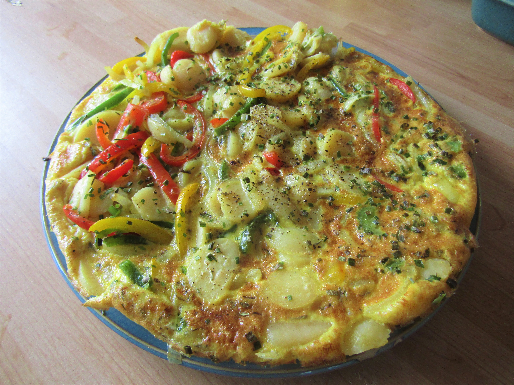

Sardine Spanish-Style Omelette

Description
This sardine Spanish-style omelette is a rich and satisfying twist on the classic Spanish
tortilla, combining tender potatoes, sweet caramelized onions, and flavorful sardines. The addition
of garlic enhances its depth, while the eggs bind everything into a soft, hearty texture.
Finished with creamy avocado slices and a light drizzle of olive oil, this dish balances savory, smooth,
and fresh flavors. It can be served warm or at room temperature, making it perfect for
breakfast, lunch, or a simple yet elegant dinner.
Ingredients
- 4 medium potatoes, peeled and thinly sliced
- 1 small onion, diced
- 1 can of sardines in olive oil, drained
- 5 large eggs
- ¼ cup of olive oil
- 1 garlic clove, minced
- salt and pepper, to taste
Optional for serving
- 1 ripe avocado, sliced, for toping
- extra olive oil, for drizzling
- fresh parsley, for garnish
Preparation
- Heat the olive oil in a large pan over medium heat.
- Add the sliced potatoes and cook slowly until soft but not crispy.
- Add the onion and cook until translucent and slightly caramelized.
- Stir in the minced garlic and cook for 1 more minute.
- Drain excess oil and transfer the mixture to a bowl.
- In a separate bowl, beat the eggs and season with salt and pepper.
- Gently fold in the potato mixture and sardines, breaking them slightly.
- Pour everything back into a lightly oiled pan over low heat.
- Cook until the bottom is set, then carefully flip the tortilla using a plate.
- Cook the other side until fully set.
- Transfer to a plate and let it rest for a few minutes.
Serving Suggestions
- Add a drizzle of olive oil
- Top with sliced avocado for extra creaminess
- Serve with sliced avocado
Home